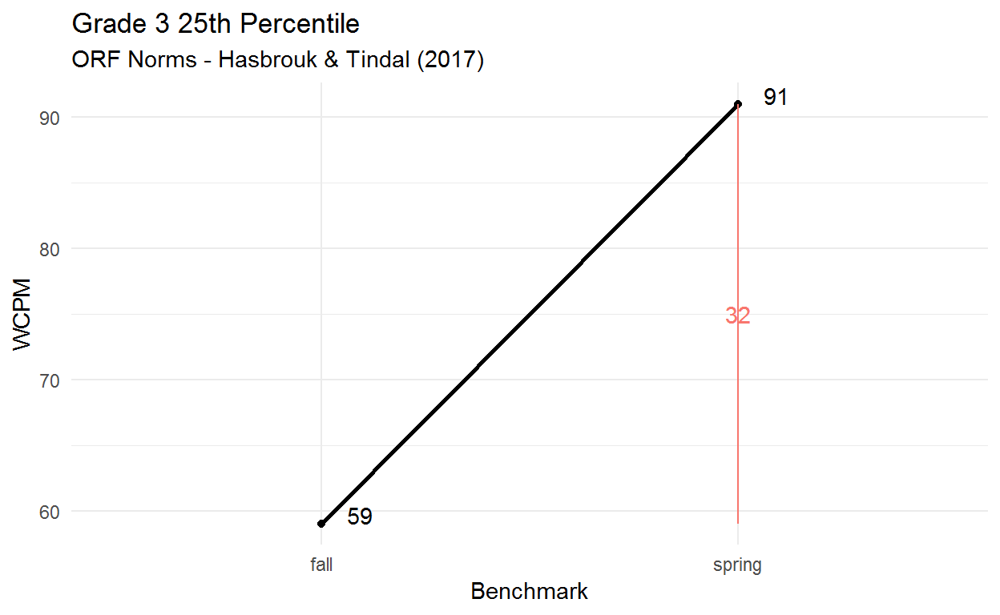
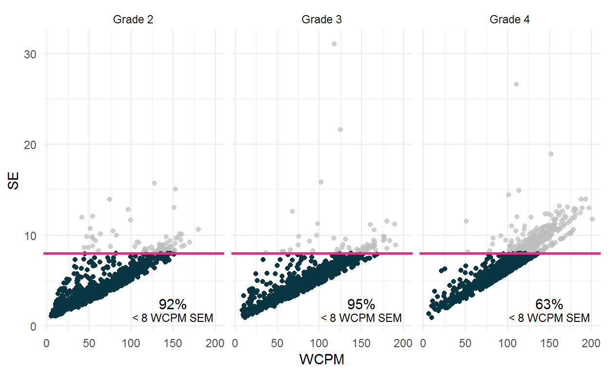

The purpose of this post is to compare the standard error of measurement (SEM) of traditional CBM-R WCPM scores and the conditional SEM (CSEM) estimates of CORE scale scores.
Reducing the standard error of measurment (SEM) of curriculum-based measures of oral reading fluency (CBM-R) scores has positive implications for teachers using these measures to monitor student growth.
The large SEM of traditional CBM-R assessments make the results less useful because the magnitude of error around a score is large. As teachers use CBM-R data to inform instruction, the large SEM of traditional CBM-R can affect the interpretations and consequences of the progress monitoring results, with implications for instructional decision-making. In order for CBM-R measures to have meaningful consequential validity for educators, scores need to be sensitive to instructional change - and the smaller the SEM the better.
The results we present here provide solid evidence that the CORE WCPM scale scores have a lower CSEM estimate compared to the SEM of traditional CBM-R WCPM scores, especially for students at risk of poor reading outcomes. Lower CSEM estimates make CORE better suited for measuring CBM-R, both for screening and progress monitoring, as a more precise score will lead to more accurate instructional decisions.
The standard error of measurement (SEM) is a measure of precision of an assessment score. The smaller the SEM, the more precise the score. The SEM is generally more useful than a reliability coefficient for assessment consumers - like teachers - because it informs the interpretation of scores.
The SEM can be used to generate confidence intervals around reported scores. This interval is the range - given a specific degree of certainty - that a student’s “true score” is contained. For example, a range of ± 1 SEM around a reported score provides an interval for which there is a 68% chance the true score falls therein, and a range of ± 2 SEM provides a 95% confidence interval that contains the true score.
The values of the SEM of traditional curriculum-based measurement of oral reading fluency (CBM-R) measures have been reported to range from 5-20 words correct per minute (WCPM) (e.g., Christ & Silberglitt, 2007; Poncy et al., 2005), and although data with SEM = 5 have been anecdotally described as “very good,” a more realistic range is 8-10 WCPM.
For example, the reported WCPM SEM ranges across grades for the following CBM-R assessments are as follows: aimsweb: 6.28 to 9.58 WCPM; DIBELS 8th Edition: 7.12 to 11.23 WCPM; easyCBM 7.71 to 12.11 WCPM; and FastBrdige: 8.54 to 10.41 WCPM. It is important to note that the CBM-R SEM generally increases across grade level for all CBM-R systems.
When measuring student progress, smaller SEMs become quite important.
The figure here shows the Hasbrouk & Tindal ORF Norms for 3rd graders at the 25th percentile. We chose the 25th percentile as these students may be classified as at risk of poor reading outcomes, and targeted to receive Tier 2 instructional supports. You can see the average fall CBM-R score is 59 WCPM, and the average spring score is 91 WCPM. Here, the average expected within-year growth for a Grade 3 student at the 25th percentile is 91 - 59 = 32 WCPM.

We can construct a 95% confidence interval around any score on the line between the two scores. Given a realistic SEM of 9 WCPM, we can estimate a 95% confidence interval of about 36 WCPM. That is: ±10 * 2 SEM = 36 WCPM.
We can see that the confidence interval range of 36 WCPM around any score on that line of growth is more than the expected growth for the entire year of 32 WCPM.
This large confidence interval is problematic when CBM-R measures are used to monitor student progress and to help make instructional decisions.
The CORE system uses model-based estimate of WCPM, based on a recently proposed latent-variable psychometric model of speed and accuracy for CBM-R data. More more details, please see the post on our Latent Variable Model for ORF.
There are several advantages of CORE’s model-based WCPM estimates compared to traditional CBM-R WCPM scores.
Here we focus on (1) above: standard errors of our model-based WCPM can be computed for each observation with a single test administration. Traditional CBM-R WCPM scores are reported with a single SEM that using a classical test theory approach, where the standard deviation of the CBM-R measures is multiplied by the square root of one minus the reliability of the CBM-R measure.
Estimates of the standard errors at different score levels is referred to here as conditional standard errors of measurement, or CSEM. According to the 2014 Standards for Educational and Psychological Testing,
“CSEM”can be much more informative than a single average SE for a population. If decisions are based on test scores and these decisions are concentrated in one area or a few areas of the scale score, then the conditional errors in those areas are of special interest."
This is true for CBM-R, and formative assessments or CBMs in general, where educators use scores to screen for students at risk for poor reading outcomes, and modify instruction based on student progress data. Teachers analyze and evaluate student assessment data to inform the following educational decisions:
For progress monitoring data, decisions are concentrated in one area of the scale score - around the 20th percentile and below, making the use of CSEM particularly valuable for CBM-R decision-making.
We used the 2017-18 data from the Consequential Validity Study, and estimated model-based WCPM and the associated SE for each student’s score. We examined the data by grade and wave of data collection (Oct, Nov, Feb, May) and found no differences across waves, so we report results by grade.
The sample included 1,021 total students; 1,372 at Grade 2, 1,416 at Grade 3, and 1,296 at Grade 4.
We compared our CORE CSEM results to the reported traditional SEM of observed WCPM for the following CBM-R systems: aimsweb Plus, DIBELS 8th Edition, easyCBM, and FastBrdige.
The traditional SEM is conceptually the average CSEM for a given sample. One way to compare our CSEM results to traditional SEM is to use examine where the distribution of our CSEM is located relative to a reference point; here, we use the traditional SEM for observed WCPM. We do this in two wasy.
For our purposes here, we used a conservative reference SEM of 8 WCPM for each grade.
The average estimated CSEM across all grades was less than 8 WCPM, and 5.15 WCPM for Grade 2, 5.47 WCPM for Grade 3, and 7.63 WCPM for Grade 4. Thus, the average CSEM of CORE was lower than the SEMs of the reference CBM-R for all grades.
| SEMs of Traditional ORF Measures and CORE Estimated Average CSEM | |||
|---|---|---|---|
| System | Grade 2 | Grade 3 | Grade 4 |
| aimsweb Plus1 | 7.78 | 7.46 | 8.40 |
| CORE | 5.15 | 5.47 | 7.63 |
| DIBELS 8th Edition | 7.84 | 9.59 | 9.63 |
| easyCBM | – | 9.73 | – |
| FastBridge | 8.54 | 8.54 | 10.41 |
| 1 Smallest SEMs across fall, winter, spring estimates. | |||
In addition, at the individual student level, across all grades, 84% of estimated CORE SEs were less than the reference SEM of 8 WCPM. For Grade 2, 92% of estimated SEs were less than the reference SEM of 8 WCPM, 95% were less in Grade 3, and 63% were less in Grade 4. These percentages are all above the 50% criterion we established a priori.

This figure also shows the relation between the estimated WCPM score and the SE, which are postively correlated (Grade 2 r = 0.82; Grade 3 r = 0.78; Grade 4 r = 0.89). This positive relation indicates that, across all grades, the SE increases as the estimated WCPM score increases.
This positive correlation has implications for the applied use of the CORE measures and scale scores, particularly for teachers using these measures to monitor the progress of student at risk of poor reading outcomes - students at the lower end of the score distribution.
Again, the 2014 Standards for Educational and Psychological Testing indicates that,
Since…decisions are based on CBM-R scores and these decisions are generally concentrated in one area of the scale score, the CSEM for students scoring at or below the 20th percentile are of special interest to teachers and researchers.
Thus, we selected students at/below the 20th percentile of estimated CORE WCPM scores by grade (Grade 2 20th percentile = 34 WCPM; Grade 3 20th percentile = 58 WCPM; Grade 4 20th percentile = 77 WCPM.)
For these students at/below the 20th percentile, the table below shows the sample size (n), the estimated mean CSEM (comparable to the SEM of traditional CBM-R), and the percent of students whose estimated WCPM score had an SE lower than 8 WCPM.
The CORE estimated mean CSEMs were around 3 to 4 WCPM - susbstandially smaller than the reported SEM of traditional CBM-R systems. In fact, more than 99% of students’ WCPM had an SE lower than 8 WCPM.
| CORE - Students At/Below 20th Percentile | |||
|---|---|---|---|
| Grade | n | Mean CSEM | Percent < 8 WCPM SE |
| Grade 2 | 200 | 2.67 | 100 |
| Grade 3 | 227 | 3.21 | 99 |
| Grade 4 | 202 | 4.38 | 99 |
The research reported here was supported by the Institute of Education Sciences, U.S. Department of Education, through Grant R305A140203 to the University of Oregon. The opinions expressed are those of the authors and do not represent views of the Institute or the U.S. Department of Education.